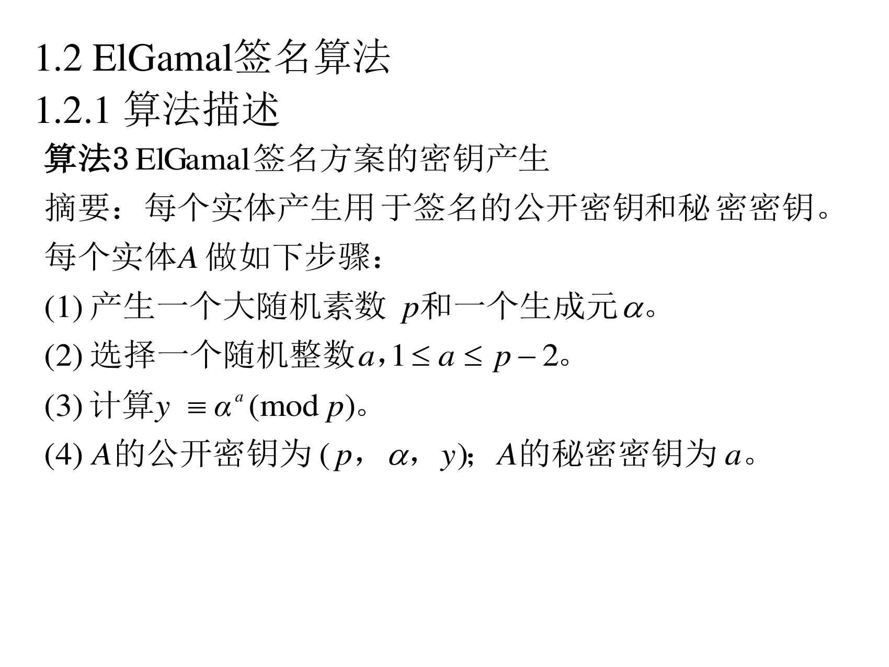
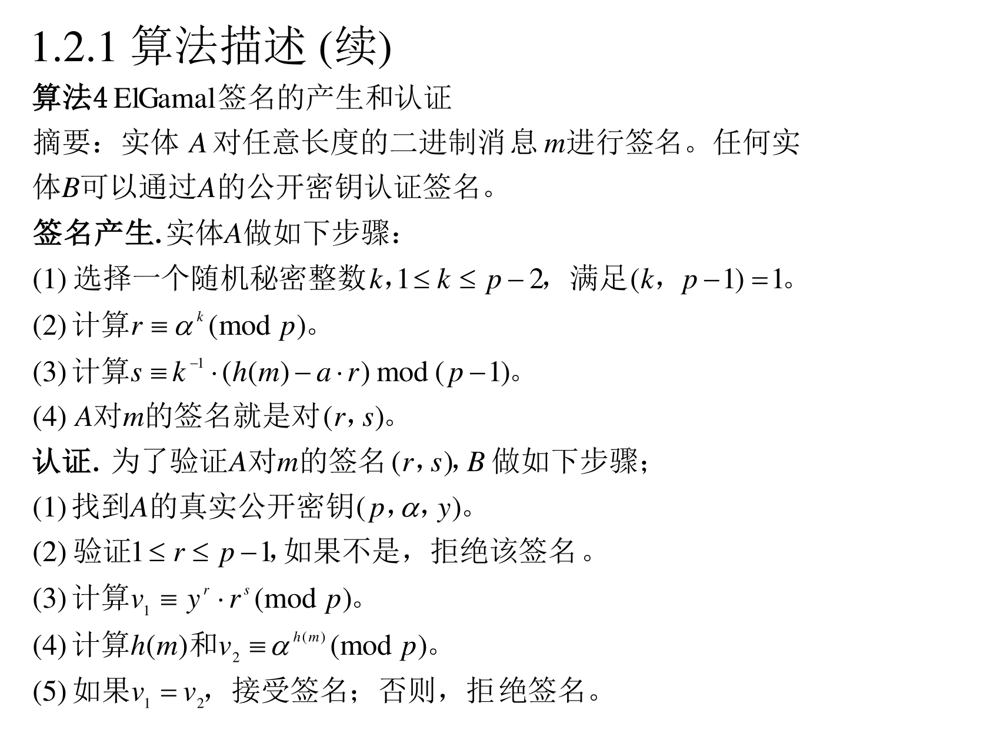
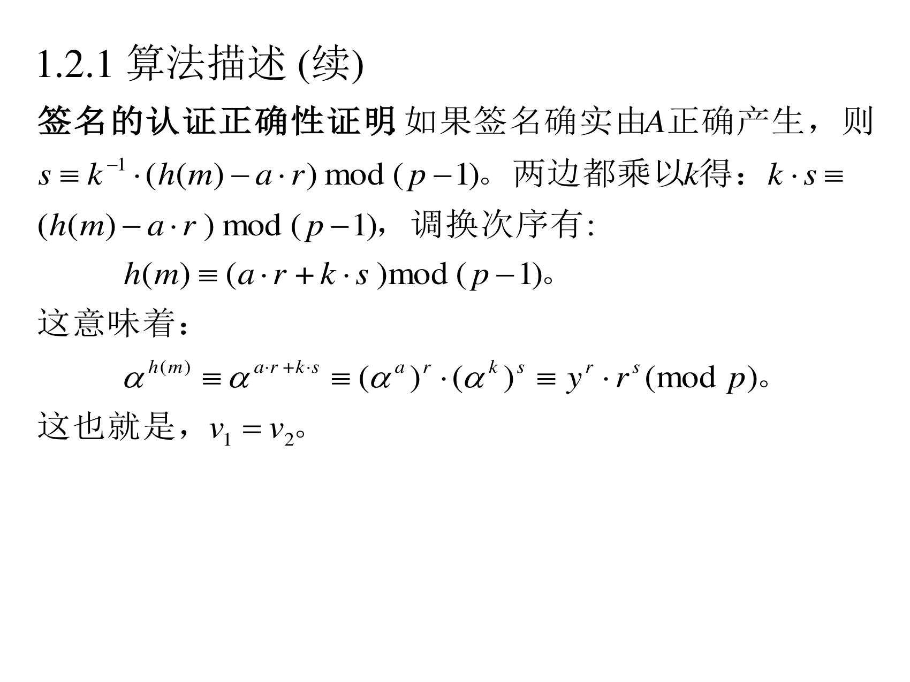
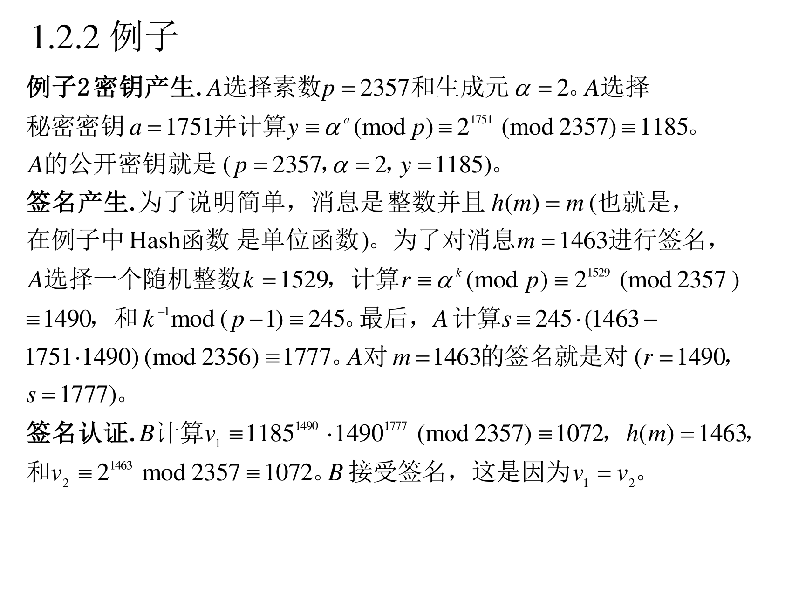
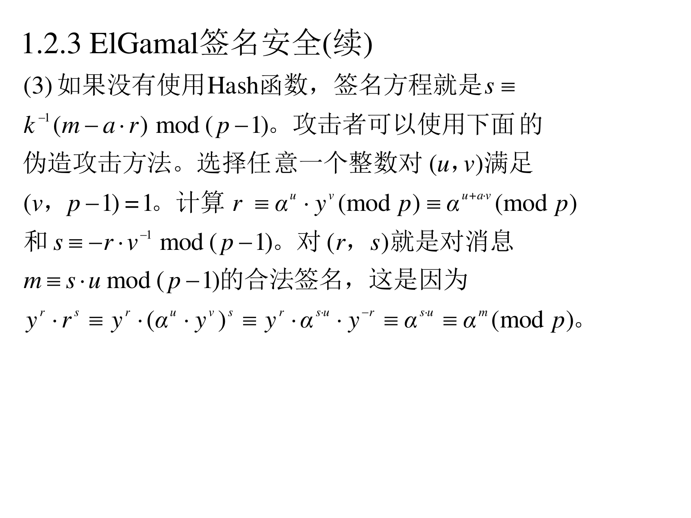
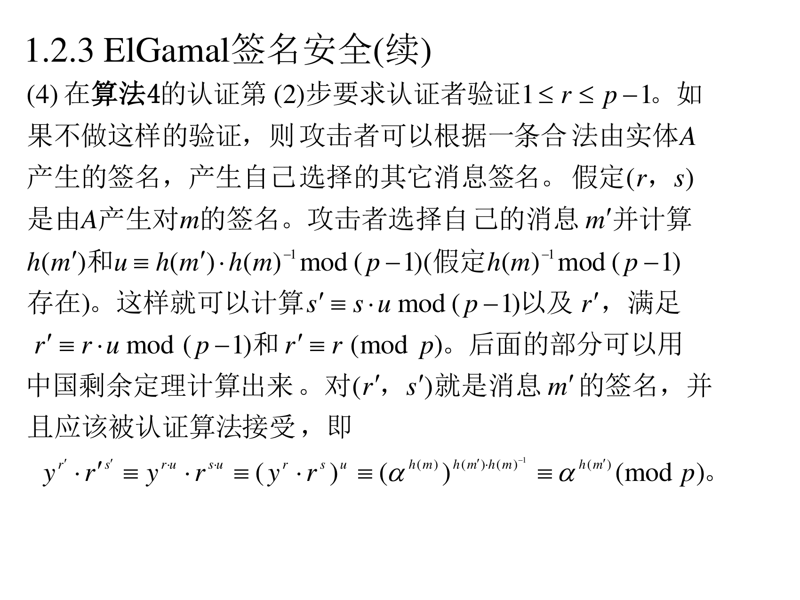
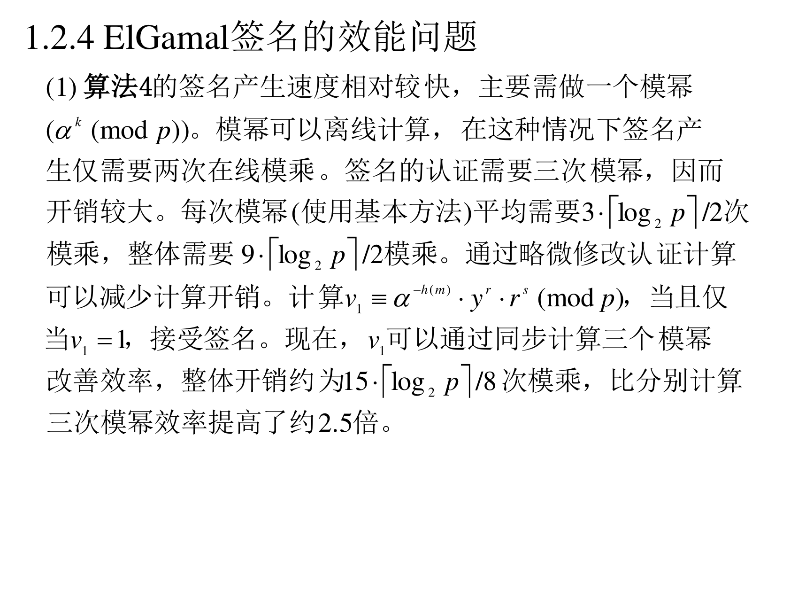
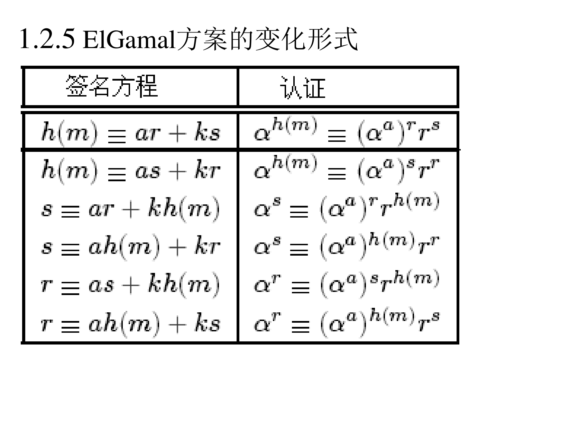

8.1.2 ElGamal 签名算法
DSA 是从 ElGamal 签名改造来的。现在回头看原版。
8.1.2.1 算法 3：密钥产生
（PPT 第 12 页）

算法 3（ElGamal 签名方案的密钥产生）
(1) 产生一个大随机素数 p 和一个生成元 α。
(2) 选择一个随机整数 a，1≤a≤p−2。
(3) 计算 y=αa(modp)。
(4) A 的公开密钥为 (p,α,y)；A 的秘密密钥为 a。
注意：和第六讲 ElGamal 加密的密钥产生完全一样。同一套密钥，加密和签名却不能混用（和 RSA 一样的原则）。
8.1.2.2 算法 4：签名与认证
（PPT 第 13 页）

算法 4（ElGamal 签名的产生和认证）
摘要：实体 A 对任意长度的二进制消息 m 进行签名。任何实体 B 可以通过 A 的公开密钥认证签名。
签名产生. 实体 A 做如下步骤：
(1) 选择一个随机秘密整数 k，1≤k≤p−2，满足 (k,p−1)=1。
(2) 计算 r≡αk(modp)。
(3) 计算 s≡k−1(h(m)−a⋅r)mod(p−1)。
(4) A 对 m 的签名就是对 (r,s)。
认证. 为了验证 A 对 m 的签名 (r,s)，B 做如下步骤：
(1) 找到 A 的真实公开密钥 (p,α,y)。
(2) 验证 1≤r≤p−1，如果不是，拒绝该签名。
(3) 计算 v1≡yr⋅rs(modp)。
(4) 计算 h(m) 和 v2≡αh(m)(modp)。
(5) 如果 v1=v2，接受签名；否则，拒绝签名。
翻译成人话（把式子对照起来看）：
- 签名：s=k−1(h(m)−ar)mod(p−1)。两边乘 k：ks≡h(m)−ar(modp−1)，移项得
h(m)≡ar+ks(modp−1)
- 验证：算 v1=yrrs=αarαks=αar+ks，和 v2=αh(m) 比较。由上面那条同余式，两者必须相等。
和 DSA 的对比（一眼看出血统）：
|
DSA |
ElGamal 签名 |
| 签名方程 |
s=k−1(h(m)+a⋅r) |
s=k−1(h(m)−a⋅r) |
| 模什么 |
modq（子群阶） |
mod(p−1)（整个群的阶） |
| 验证 |
(αu1yu2modp)modq=r |
yrrsmodp=αh(m)modp |
| 签名长度 |
约 2×160 比特 |
约 2×∣p∣ 比特（长得多） |
| 逆元存在性 |
只需 s=0 |
需要 (k,p−1)=1，且 s 与 p−1 互素 |
8.1.2.3 正确性证明
（PPT 第 14 页）

签名的认证正确性证明. 如果签名确实由 A 正确产生，则 s≡k−1(h(m)−a⋅r)mod(p−1)。两边都乘以 k 得：k⋅s≡(h(m)−a⋅r)mod(p−1)，调换次序有：
h(m)≡(a⋅r+k⋅s)mod(p−1)
这意味着：
αh(m)≡α(a⋅r+k⋅s)≡αa⋅r⋅αk⋅s≡yr⋅rs(modp)
这也就是，v1=v2。
8.1.2.4 例子 2（完整手算）
（PPT 第 15 页）

例子 2
密钥产生. A 选择素数 p=2357 和生成元 α=2。A 选择秘密密钥 a=1751 并计算 y≡αa(modp)≡21751(mod2357)≡1185。A 的公开密钥就是 (p=2357,α=2,y=1185)。
签名产生. 为了说明简单，消息是整数并且 h(m)=m（也就是，在例子中 Hash 函数是单位函数）。为了对消息 m=1463 进行签名，A 选择一个随机整数 k=1529，计算 r≡αk(modp)≡21529(mod2357)≡1490，和 k−1mod(p−1)≡245。最后，A 计算 s≡245⋅(1463−1751⋅1490)(mod2356)≡1777。A 对 m=1463 的签名就是对 (r=1490, s=1777)。
签名认证. B 计算
v1≡11851490⋅14901777(mod2357)≡1072,h(m)=1463,
和 v2≡21463mod2357≡1072。B 接受签名，这是因为 v1=v2。
核对（全部验算过）：
- 21751mod2357=1185 ✔（和第六讲例 7 的公钥一样）
- 21529mod2357=1490 ✔
- 1529−1mod2356=245 ✔
- 1463−1751×1490=1463−2608990=−2607527；−2607527mod2356：2356×1106=2605736，−2607527+2607527… 用另一种算法：245×(−2607527)mod2356=1777 ✔（PPT 的 1777 正确）
- 11851490⋅14901777mod2357=1072 ✔；21463mod2357=1072 ✔
一个细节值得注意：h(m)=m 这种"Hash 函数是单位函数"的设定，只在教学例子里成立。真实系统必须用真正的 Hash 函数（下面 8.1.2.5 的第 (3)(4) 条会说明为什么）。
8.1.2.5 ElGamal 签名的安全性
（PPT 第 16–19 页） 这里列了四条，每条都是一个真实的攻击面。
(1) k 泄密就是全部泄密
攻击者可能随机选择整数 k 并计算 r≡αk(modp) 来试图伪造 A 对消息 m 的签名。这需要攻击者确定 s≡k−1(h(m)−a⋅r)mod(p−1)。如果离散对数问题计算不可能，攻击者应该没有比随机选择 s 更好的方法，这时成功的概率仅约为 1/p，在 p 很大的时候可以忽略。
翻译成人话：伪造签名需要 a（私钥）或者解出 k。随机撞的成功率是 1/p，p 一大就没事。
(2) k 绝不能重用
对每个不同的消息进行签名的时候，必须使用不同的 k；否则秘密密钥将有非常高的概率会被推导出来。
翻译成人话：如果同一个 k 签了两条消息 m1,m2，就有两个方程
s1=k−1(h(m1)−ar),s2=k−1(h(m2)−ar)
两式相减能直接消掉 a：s1−s2=k−1(h(m1)−h(m2))，于是 k 被解出来，再代回任一式即得私钥 a。这就是历史上索尼 PS3 被破的姿势（同一个随机数签了两次）。和第六讲 ElGamal 加密的 k 复用是同一类错误。
(3) 不用 Hash 函数时的伪造攻击（PPT 第 17 页）

如果没有使用 Hash 函数，签名方程就是 s≡k−1(m−a⋅r)mod(p−1)。攻击者可以使用下面的伪造攻击方法。选择任意一个整数对 (u,v) 满足 (v, p−1)=1。计算 r≡αu⋅yv(modp)≡αu+av(modp) 和 s≡−r⋅v−1mod(p−1)。对 (r,s) 就是对消息 m≡s⋅umod(p−1) 的合法签名，这是因为
yr⋅rs≡yr⋅(αu⋅yv)s≡yr⋅αsu⋅y−r≡αsu≡αm(modp)
翻译成人话（这个构造非常巧妙，跟着走三步）：
- 攻击者先自己造两个随机数 u,v（v 要和 p−1 互素，这样才能求逆）。
- 令 r=αuyv（这是个看起来正常的签名前半部分），s=−rv−1。
- 然后倒推出"这条签名对应的消息是 m=su"——注意，攻击者不是伪造了对现有消息的签名，而是"造了一个签名，然后宣布它对应某个消息"。
所以这是"存在性伪造"：攻击者控制不了签名对应哪条消息（m 是被算出来的）。加了 Hash 函数 h 就没用了，因为那样"消息"必须是 h(m) 的原像，攻击者算不出来。这就是 ElGamal 签名必须配 Hash 函数的原因。
(4) 认证方必须检查 1≤r≤p−1（PPT 第 18 页）

在算法 4 的认证第 (2) 步要求认证者验证 1≤r≤p−1。如果不做这样的验证，则攻击者可以根据一条合法由实体 A 产生的签名，产生自己选择的其它消息签名。假定 (r,s) 是由 A 产生对 m 的签名。攻击者选择自己的消息 m′ 并计算 h(m′) 和 u≡h(m′)h(m)−1mod(p−1)（假定 h(m)−1mod(p−1) 存在）。这样就可以计算 s′≡s⋅umod(p−1) 以及 r′，满足 r′≡r⋅umod(p−1) 和 r′≡r(modp)。后面的部分可以用中国剩余定理计算出来。对 (r′,s′) 就是消息 m′ 的签名，并且应该被认证算法接受，即
yr′⋅r′s′≡yr⋅u⋅rs⋅u≡(yr⋅rs)u≡αh(m)u≡αh(m′)(modp)
翻译成人话：这是一个"签名变形"攻击——拿一条能公开看到的合法签名，把它乘方，就得到另一条消息的合法签名：
- 攻击者手上有一条 (r,s) 是消息 m 的签名；
- 他想让同一条签名"改嫁"到消息 m′ 上去。取 u=h(m′)h(m)−1mod(p−1)；
- 令 s′=sumod(p−1)、r′ 满足 r′≡rumod(p−1) 同时 r′≡r(modp) —— 这两个条件要用 CRT 求（一个模 p−1，一个模 p）；
- 验证：yr′r′s′=(yrrs)u=αh(m)u=αh(m′) ✔ 通过。
为什么"检查 1≤r≤p−1"能挡住：攻击者用 CRT 算出的 r′ 可能落在 [1,p−1] 之外（不在合法范围内），协议如果严格要求 r 合法就拒绝，攻击就失效了。这是"输入校验"的经典案例：一个看似多余的检查，实际挡住了整条攻击链。
(5) 参数要求（PPT 第 19 页）
素数 p 应该足够大以阻止指数积分方法的有效使用，并且 (p−1) 应该有一个足够大的素因子 q 以阻止 Pohlig-Hellman 离散对数攻击。
翻译成人话：和第六讲的三条铁律完全一致。这也正是 DSA 用 q 阶子群的原因——直接从参数结构上把 Pohlig-Hellman 的威胁掐掉。
8.1.2.6 ElGamal 签名的效能问题
（PPT 第 20–21 页）

(1) 算法 4 的签名产生速度相对较快，主要需做一个模幂（αk(modp)）。模幂可以离线计算，在这种情况下签名产生仅需要两次在线模乘。签名的认证需要三次模幂，因而开销较大。每次模幂（使用基本方法）平均需要 3⋅⌈log2p⌉/2 次模乘，整体需要 9⋅⌈log2p⌉/2 模乘。通过略微修改认证计算可以减少计算开销。计算
v1≡α−h(m)⋅yr⋅rs(modp)
当且仅当 v1=1，接受签名。现在，v1 可以通过同步计算三个模幂改善效率，整体开销约为 15⋅⌈log2p⌉/8 次模乘，比分别计算三次模幂效率提高了约 2.5 倍。
翻译成人话：
- 原始认证：算 yr、rs、αh(m) 三次模幂再比。三次模幂 ≈ 9⌈log2p⌉/2 次模乘（1024 比特时约 4600 次）。
- 改进认证：把比较改成"乘起来等于 1"——v1=α−h(m)yrrs，三个幂可以一起算（同步/多指数算法，共享中间的平方计算）。开销降到约 15⌈log2p⌉/8（1024 比特时约 1920 次），快 2.5 倍。
（PPT 第 21 页）
(2) 根据目前模 p 离散对数计算的进展，1024 比特的模 p 是阻止各种攻击的一般安全要求。从长远的安全考虑，应该使用 2048 比特或更大的模。
(3) 所有的实体可以选择相同的素数 p 和生成元 α，这样 p 和 α 可以不再作为公开密钥的一部分，而作为系统参数。
8.1.2.7 ElGamal 方案的变化形式
（PPT 第 22 页） —— 这一页用一张表展示了"签名方程"和"认证方程"的六种等价变形。它们是同一个数学事实的不同写法，很多实际方案（包括 DSA、Schnorr）就是从这张表里挑一行改出来的。

| 签名方程 |
认证方程 |
| h(m)≡ar+ks |
αh(m)≡(αa)rrs |
| h(m)≡as+kr |
αh(m)≡(αa)srr |
| s≡ar+kh(m) |
αs≡(αa)rrh(m) |
| s≡ah(m)+kr |
αs≡(αa)h(m)rr |
| r≡as+kh(m) |
αr≡(αa)srh(m) |
| r≡ah(m)+ks |
αr≡(αa)h(m)rs |
怎么看这张表（以第一行为例）：
- 签名方程：h(m)≡ar+ks。签的人知道 a，选一个 k，就能解出 s。
- 认证方程：两边同时以 α 为底取幂 αh(m)=αar+ks=(αa)r⋅(αk)s=(αa)rrs。验证方知道 (αa)=y 和 r，可以直接算出来比对。
- 其余各行：只是把 s 和 r 的角色、或者"哪一项包含消息"换了一下位置，数学上完全等价（每一行都对应一个能验证的方案）。DSA 取的是"h(m)≡ar+ks 的变形"（s=k−1(h(m)+ar) 就是把 a,k 换了个符号位置）。
补这张表的价值：它告诉你"签名方案的设计空间很大"。所以后来出现了很多变体，各自优化不同的指标（签名长度、验证速度、能否消息恢复、能否聚合……）。你看第八讲的三个方案，本质上都是这张表里某一行的工程化改良版。